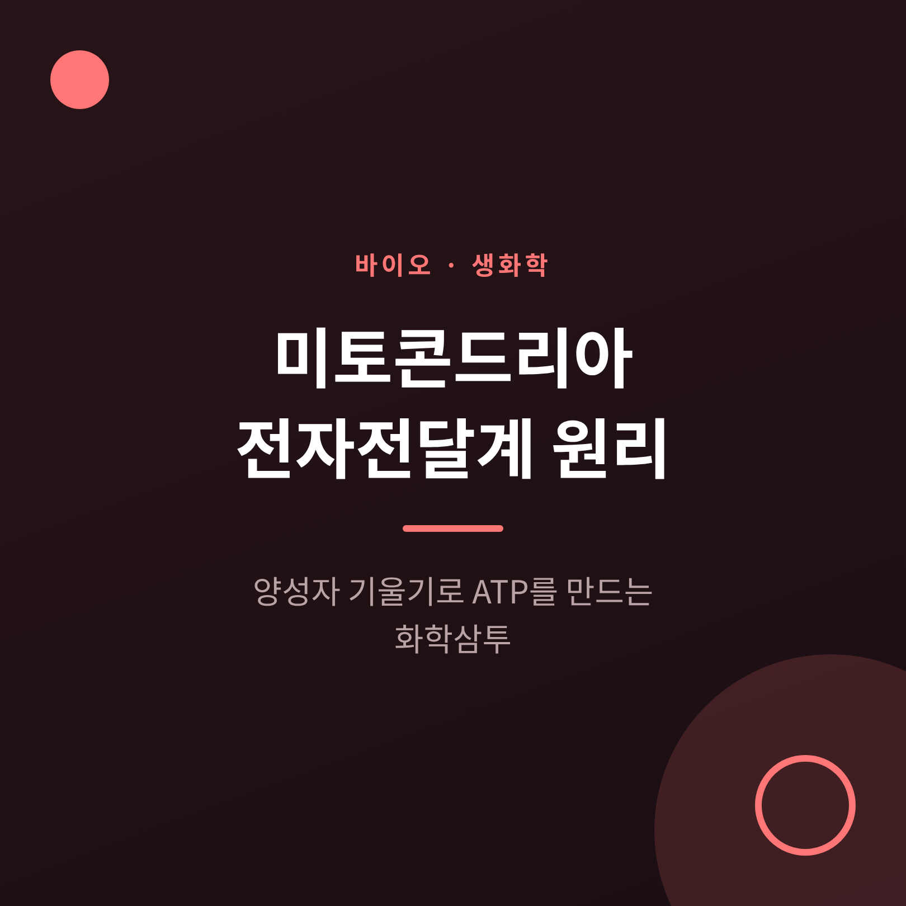
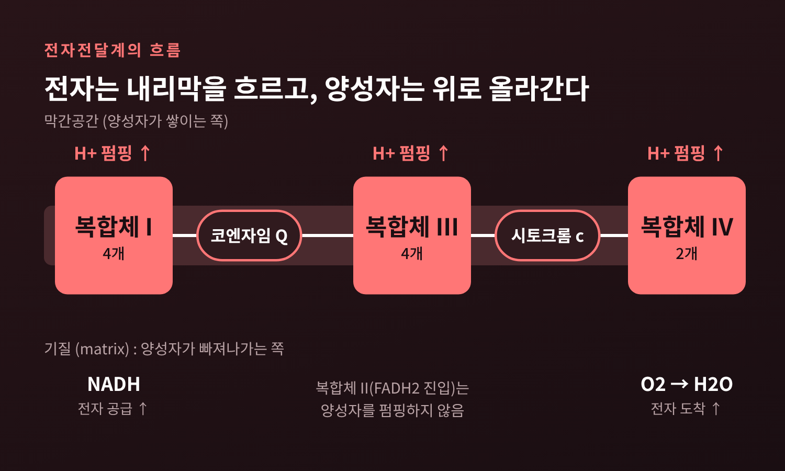
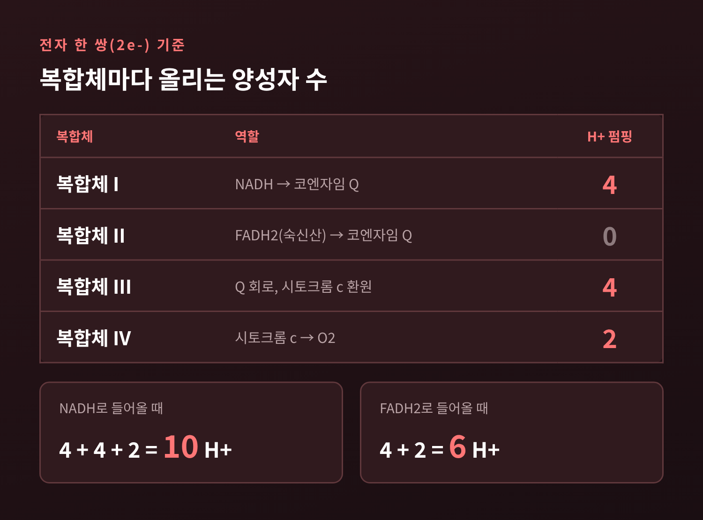
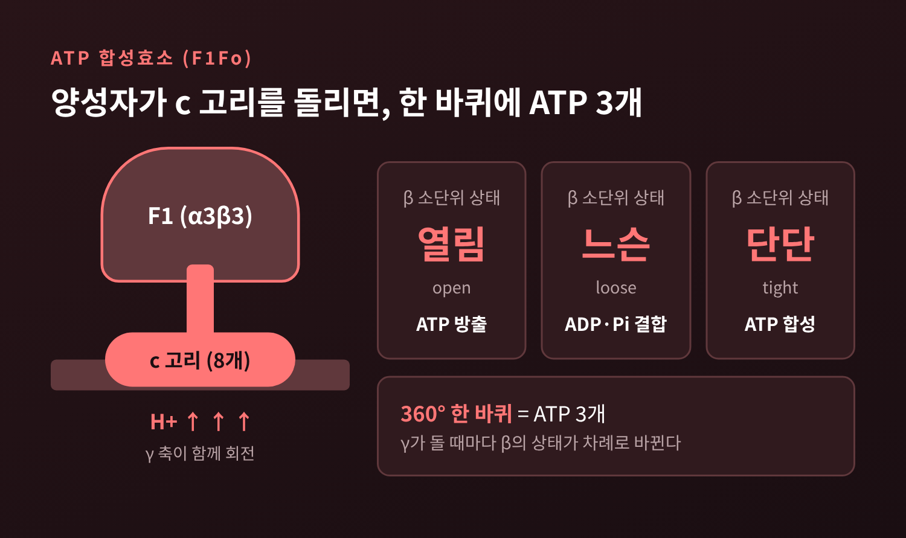
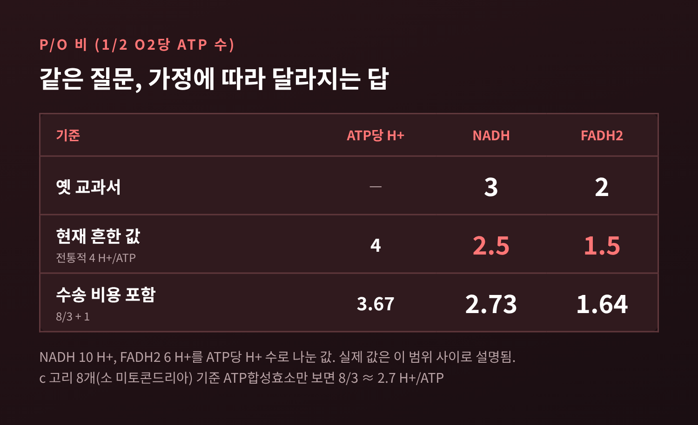
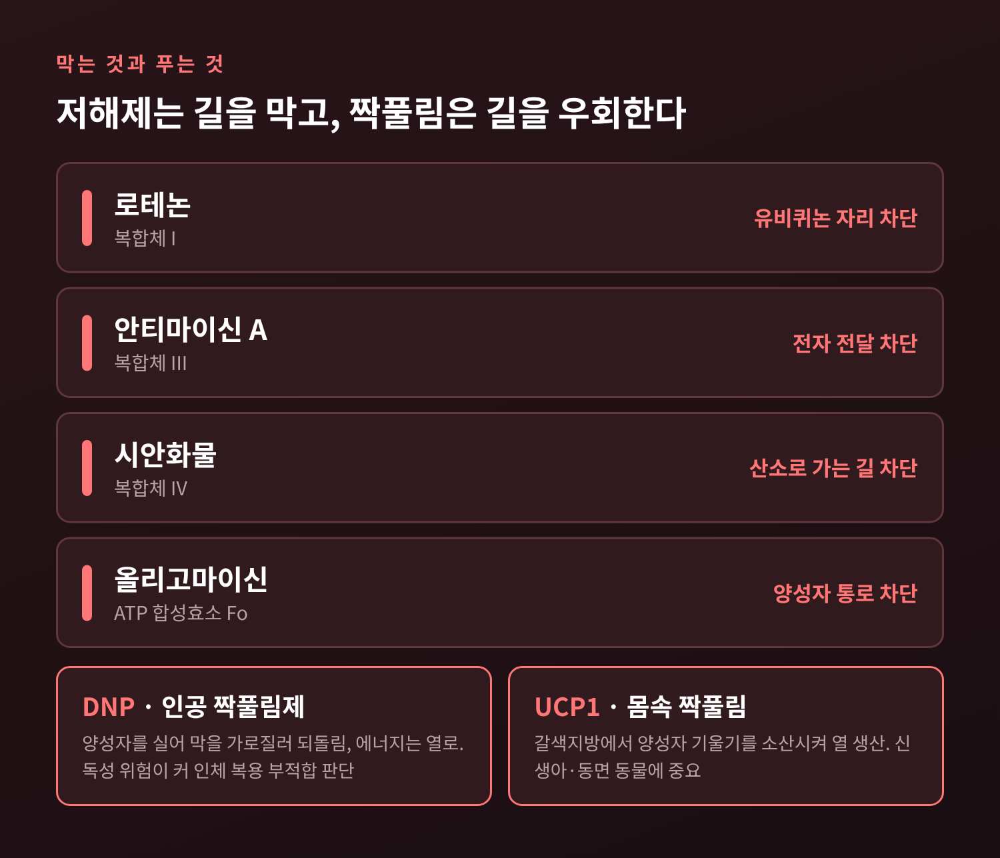

미토콘드리아 전자전달계 원리, 양성자 기울기로 ATP를 만드는 화학삼투

오늘은 미토콘드리아 전자전달계와 화학삼투에 대해 이야기해 보려 합니다. NADH가 내놓은 전자가 어떻게 양성자 농도 기울기가 되고, 그 기울기가 ATP 합성효소를 어떻게 돌려 ATP를 만드는지 차례로 따라가 보겠습니다. 복합체 I~IV의 양성자 수, P/O 비, 저해제와 짝풀림 사례까지 함께 정리했습니다.
세 줄 요약
- 전자가 복합체 I~IV를 따라 내리막으로 흐르며 양성자를 막 바깥(막간공간)으로 퍼 올립니다. NADH 한 분자당 전자쌍 기준 10개입니다.
- 쌓인 양성자가 ATP 합성효소를 통해 되돌아오면서 회전자를 돌리고, 한 바퀴에 ATP 3개가 만들어집니다.
- ATP 수율(P/O 비)은 NADH 약 2.5, FADH2 약 1.5로 보는 것이 현재 흔한 값이며, 교과서마다 범위가 다릅니다.
전자는 내리막을 흐르고, 에너지는 양성자에 저장됩니다
세포가 포도당을 분해하면 NADH와 FADH2가 생깁니다. 이 분자들은 전자를 실어 나르는 짐꾼입니다. 전자는 미토콘드리아 내막에 박힌 네 개의 복합체를 거쳐 마지막에 산소로 넘어가 물이 됩니다.
전자가 이동하는 방향은 정해져 있습니다. 각 운반체는 바로 앞 단계보다 환원전위가 더 높아서, 전자는 계단을 내려가듯 흐릅니다. 복합체 사이에서는 지용성 운반체인 코엔자임 Q(유비퀴논)와 수용성 단백질인 시토크롬 c가 전자를 옮깁니다.
핵심은 이 내리막에서 나오는 에너지를 열로 흘려보내지 않는다는 점입니다. 복합체 I, III, IV는 전자가 지날 때마다 그 에너지로 양성자(H+)를 기질(matrix)에서 막간공간으로 퍼 올립니다. 복합체 II는 숙신산 산화로 얻는 에너지가 적어 양성자를 펌핑하지 않습니다.

복합체마다 양성자는 몇 개일까
전자 한 쌍(2e-)을 기준으로 세면 이렇습니다.
복합체 I은 NADH 한 분자를 산화할 때 양성자 4개를 펌핑합니다. 포유류의 복합체 I은 약 45개 소단위로 이루어진 L자형 거대 효소입니다. 막에 박힌 부분에는 막관통 나선이 약 60개나 되고, FMN과 철-황 클러스터 8개가 전자를 유비퀴논까지 전달합니다. 양성자를 어떻게 퍼 올리는지는 구조 변화가 관여한다는 데까지만 알려져 있으며, 정확한 기작은 아직 분명하지 않습니다.
복합체 III에서는 Q 회로(Q cycle)라는 독특한 방식이 쓰입니다. 이 회로 덕분에 전자 한 쌍당 양성자 4개가 막을 건넙니다.
복합체 IV, 곧 시토크롬 c 산화효소는 전자 4개로 산소 한 분자를 물 두 분자로 환원합니다. 이때 양성자 4개를 펌핑하고, 별도로 4개를 산소 환원에 소모합니다. 전자 한 쌍으로 환산하면 펌핑은 2개입니다.
더하면 4 + 4 + 2 = 10입니다. NADH의 전자는 양성자 10개를 퍼 올리고, 복합체 II로 들어오는 FADH2의 전자는 복합체 I을 건너뛰어 4 + 2 = 6개를 올립니다. 이 차이가 뒤에 나올 P/O 비의 차이로 이어집니다.

1961년, 모두가 의심했던 가설: 화학삼투설
이 구조를 처음 설명한 사람은 영국의 피터 미첼(Peter Mitchell)입니다. 1961년에 그는 전자전달과 ATP 합성에 관여하는 효소들이 막 안에 정해진 방향으로 박혀 있고, 양성자를 막 너머로 옮긴다고 제안했습니다. 전자전달이 전기화학적 양성자 기울기를 만들고, 그 기울기가 ATP 합성을 구동한다는 것입니다.
미첼의 설명은 당시의 통념에서 크게 벗어났고 초기 실험 증거도 적었습니다. 학계 다수가 의심한 것은 자연스러운 일이었습니다.
그러나 이후 10여 년 동안 이 가설은 생체에너지학의 중심 주제가 되었고, 실험 증거가 쌓였습니다. 미첼은 1978년 노벨 화학상을 받았습니다. 노벨상 시상 연설은 그의 기본 가정이 실험적으로 입증되었다고 평가했습니다.
이 이론에서 막은 중요한 조건입니다. 막은 양성자를 거의 통과시키지 않는 닫힌 장벽이어야 합니다. 그래서 온전한 막이 없으면 산화적 인산화도 일어나지 않습니다.
양성자 구동력, 대부분은 '전압'입니다
양성자가 쌓이면 두 가지 차이가 생깁니다. 하나는 농도 차이, 곧 pH 차이입니다. 다른 하나는 막을 사이에 둔 전위 차이입니다. 둘을 합친 것이 양성자 구동력(proton-motive force)입니다.
분리한 미토콘드리아에서 총 양성자 구동력은 대사 상태에 따라 180~220 mV 범위로 측정됩니다. 이 가운데 막전위가 약 150~180 mV이고, pH 차이는 0.5~1.2 pH 단위로 약 30~70 mV를 차지합니다. 기질이 약 7.5~8.2, 바깥이 약 7입니다. 비율로 보면 pH 몫이 17~30%이고 나머지가 전압입니다. 세포 종류에 따라 편차가 크다는 점은 감안하셔야 합니다.
'농도 기울기'라고만 부르면 댐에 물이 고인 장면이 떠오르지만, 실제로는 수문 위아래의 높이 차이보다 전압 차이가 더 큰 몫을 하는 셈입니다.
ATP 합성효소: 양성자가 돌리는 가장 작은 모터
기울기를 소비하는 장치가 ATP 합성효소입니다. 두 부분으로 나뉩니다. 기질 쪽으로 돌출한 수용성 부분이 F1이고, 막에 박힌 양성자 통로가 Fo입니다. F1은 α 3개와 β 3개가 둥글게 모인 육량체이고, 그 가운데를 비대칭의 γ 소단위가 관통합니다. Fo에는 c 소단위가 고리 모양으로 모여 있습니다.
양성자가 Fo의 통로로 들어오면 c 고리가 돌고, 거기에 붙은 γ가 함께 돕니다. γ가 돌 때마다 β 소단위의 모양이 바뀝니다. 폴 보이어(Paul Boyer)가 제안한 결합변화 메커니즘에 따르면 β는 열림, 느슨, 단단이라는 세 상태를 차례로 오갑니다. 에너지가 드는 단계는 ADP와 인산을 붙잡는 일과 완성된 ATP를 떼어내는 일입니다. 노벨위원회의 표현을 빌리면 '바퀴가 한 번 돌 때마다 ATP라는 화폐 세 개가 찍혀 나오는' 셈입니다.
이 회전은 한동안 가설이었습니다. 1997년에 일본 연구진이 γ에 형광 액틴 필라멘트를 붙여 F1 한 분자의 회전을 직접 관찰했습니다. 필라멘트는 100회전 넘게 돌았고, 토크는 40 pN·nm 이상이었습니다. 같은 해 보이어와 존 워커(John Walker)가 노벨 화학상을 받았습니다. 워커는 F1의 3차원 구조를 풀어 보이어의 모형을 뒷받침했습니다. 척추동물의 경우 c 고리는 초당 약 100번 돈다고 추정됩니다.

P/O 비: 같은 질문에 답이 여럿인 이유
산소 원자 하나(1/2 O2)를 환원하는 동안 ATP가 몇 개 만들어지는지를 P/O 비라고 합니다. 옛 교과서는 NADH 3, FADH2 2로 가르쳤습니다. 지금은 NADH 약 2.5, FADH2 약 1.5를 흔히 씁니다.
차이는 두 숫자에서 나옵니다. 하나는 ATP 한 개에 필요한 양성자 수입니다. c 고리가 몇 개이고, 한 바퀴에 ATP가 몇 개 나오는지가 관건입니다. 2010년 워커 연구진은 소 미토콘드리아의 c 고리가 8개라고 밝혔습니다. 곰팡이, 세균, 엽록체의 c 고리는 10~15개입니다. 8개라면 ATP당 양성자 8/3, 약 2.7개입니다. 10~15개라면 3.3~5개입니다. 연구진은 8개짜리 고리가 척추동물 약 5만 종과 다수의 무척추동물에 해당하리라 추정했습니다.
다른 하나는 수송 비용입니다. 만들어진 ATP를 내보내고 인산을 들여오는 데 양성자가 1개쯤 더 듭니다. 합치면 ATP당 약 3.67개입니다. 전통적으로는 4개로 계산해 왔습니다.
이 값들로 나누어 보면 이렇습니다. NADH의 10개를 4로 나누면 2.5이고, FADH2의 6개를 4로 나누면 1.5입니다. 3.67로 나누면 각각 2.73과 1.64입니다. 실제 값은 대체로 이 범위 안에 놓인다고 설명됩니다. 일부 문헌은 여전히 3을 주장하기도 합니다. 정답 하나가 아니라 가정에 따라 달라지는 범위로 이해하시길 권합니다.

참고로 포도당 한 분자에서 산화적 인산화로 얻는 이론 최대 수확은 약 30~36 ATP입니다. 양성자가 새어 나가기 때문에 실제로는 이보다 적습니다.
고장 난 모터와 일부러 푼 커플링
이 시스템은 한 곳이 막히면 전체가 멈춥니다. 저해제는 막힌 위치에 따라 정리됩니다.
복합체 I은 로테논이 막습니다. 열대 식물에서 얻는 물질로, 유비퀴논 결합 부위에 붙습니다. 복합체 III은 안티마이신 A가 막습니다. 복합체 IV는 시안화물, 일산화탄소, 아지드, 황화수소가 막습니다. 시안화물은 복합체 IV에 강하게 결합해 산소로 가는 마지막 길을 닫습니다. ATP 합성효소의 Fo는 올리고마이신이 막습니다. 'Fo'라는 이름 자체가 올리고마이신에 민감한 부분이라는 데서 왔습니다.
반대로 전자전달은 돌아가는데 ATP 합성만 건너뛰는 경우도 있습니다. 이것이 짝풀림(uncoupling)입니다. 2,4-디니트로페놀(DNP)은 양성자를 싣고 막을 가로질러, 펌핑한 양성자를 ATP 합성효소 없이 되돌려 보냅니다. 에너지는 열이 됩니다.
DNP에는 어두운 이력이 있습니다. 1차 세계대전 때 프랑스 군수공장 노동자들이 중독되어 일부가 사망했습니다. 1930년대에는 체중 감량에 쓰여 미국에서 최소 10만 명이 치료받았다는 추정이 있습니다. 그러나 백내장 같은 부작용이 보고되었고, 1938년 이후 인체 복용에는 독성이 너무 크다고 판단되었습니다. 과량이면 체온이 최대 44도까지 오를 수 있고 해독제가 없습니다. 지금도 사망 사례가 보고됩니다. 작동 원리를 이해하는 것과 직접 시도하는 것은 전혀 다른 문제입니다.
몸 안에도 짝풀림을 일부러 쓰는 곳이 있습니다. 갈색지방조직의 UCP1(thermogenin)입니다. 이 단백질은 내막의 양성자 투과성을 높여 기울기를 소산시키고, 연료를 태우되 ATP는 거의 만들지 않습니다. 신생아, 소형 포유류, 동면 동물에서 열을 내는 데 중요합니다. 교감신경의 노르에피네프린이 신호를 보내면 유리지방산이 만들어져 UCP1을 활성화하고, GDP와 ADP 같은 퓨린 뉴클레오타이드는 억제합니다. 1976년에 니컬스 등이 발견했습니다.

정리하면 이렇습니다. 전자는 복합체 I~IV를 따라 내려가며 양성자를 퍼 올리고, 그렇게 쌓인 양성자 구동력이 ATP 합성효소를 돌려 ATP를 만듭니다. 이 모든 과정은 안과 밖을 가르는 얇은 막 위에서 일어납니다.
전자의 흐름이 양성자의 기울기가 되고, 기울기가 회전이 되고, 회전이 ATP가 된다.
수치 가운데 P/O 비처럼 교과서마다 다른 값이 있다는 점은 기억해 두실 만합니다. 한계가 있다는 것은 아직 풀어야 할 부분이 남았다는 뜻이기도 합니다. 한 걸음 물러서 보면, 지금 이 문장을 읽는 동안에도 우리 세포 속 수많은 작은 모터가 쉬지 않고 돌고 있습니다.